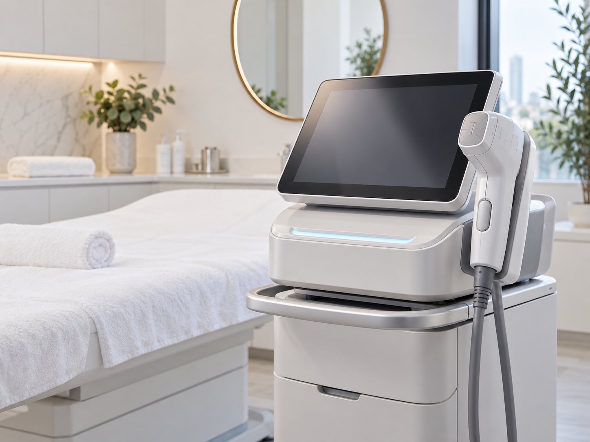
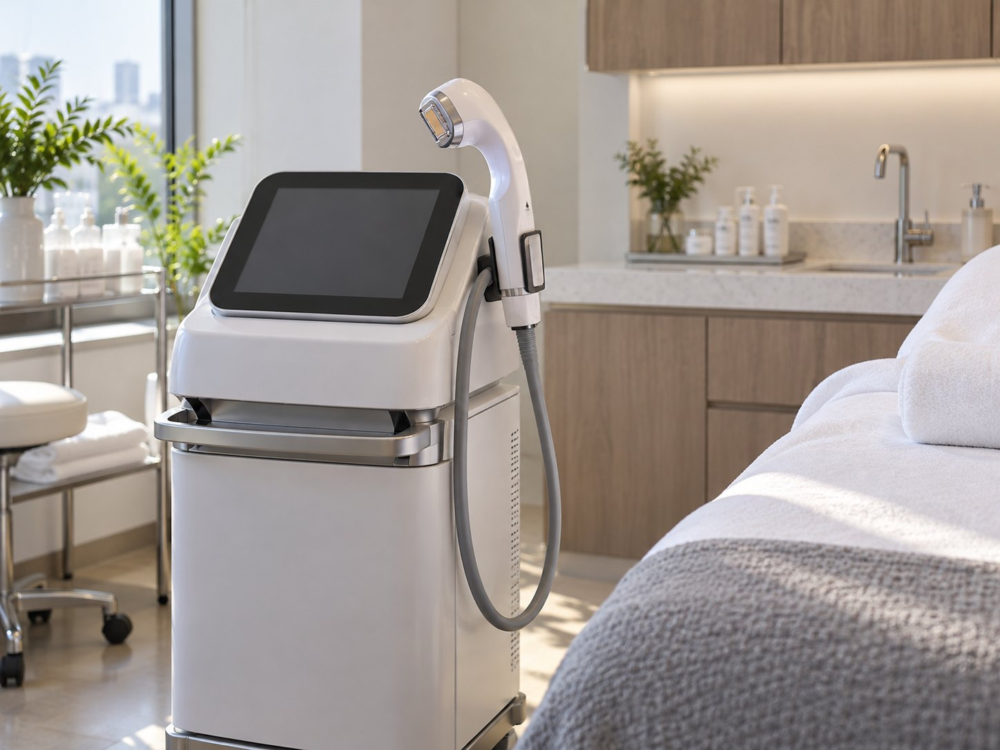
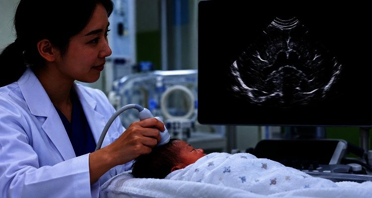
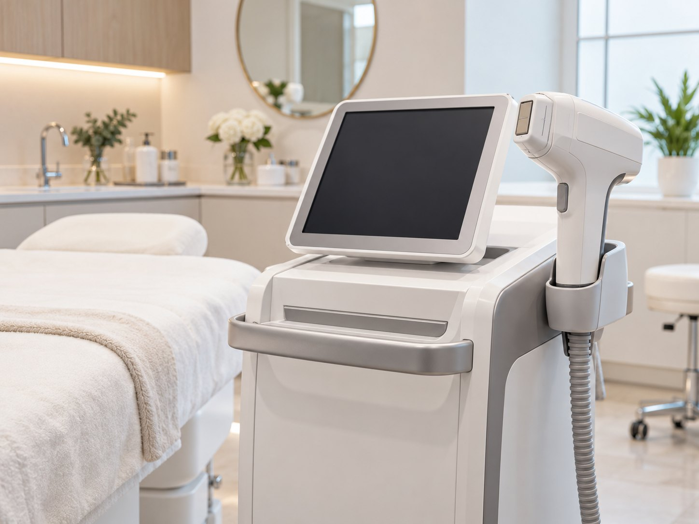
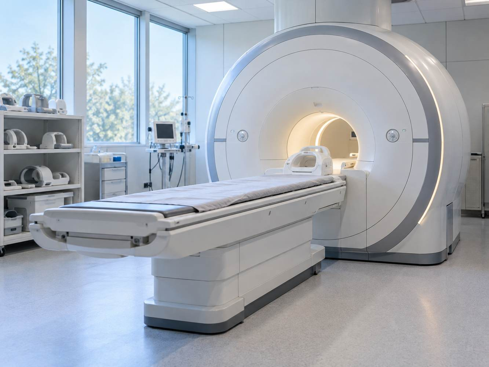
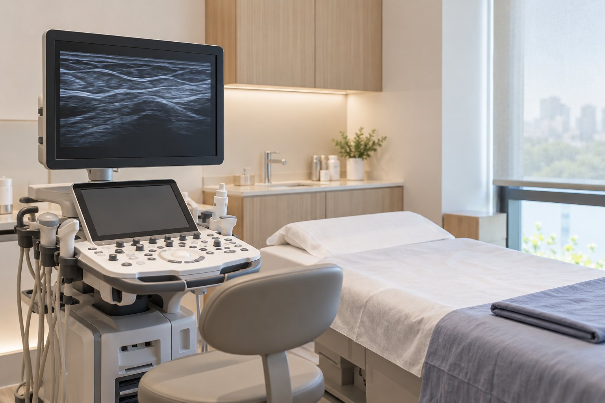
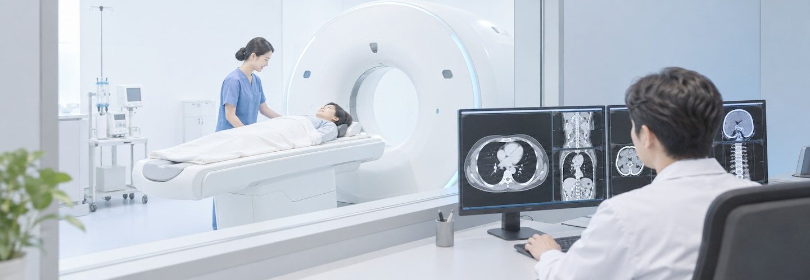

시술 가격
* VAT 포함
- 원데이 레벨리프팅 패키지집속 초음파 300샷과 RF 탄력 300샷, PN 주사힐러 4cc, 스킨 톡스를 함께 구성한 시술 예시입니다. 🎁 이벤트 진행중 🎁2,220,000원
- 원데이 레벨리프팅 패키지초음파 리프팅과 고주파, 피부 재생 주사와 표정 주름 치료를 조합한 구성입니다. 🎁 이벤트 진행중 🎁2,680,000원
- 원데이 레벨리프팅 패키지집속 초음파과 RF 탄력을 각각 600샷으로 진행하고 PN 주사힐러 4cc와 스킨 톡스를 더한 구성입니다. 🎁 이벤트 진행중 🎁3,440,000원
- 볼살/이중턱 패키지집속 초음파 300샷과 귀밑 또는 턱밑 침샘 보툴리눔 톡신 시술을 함께 안내합니다. 🎁 이벤트 진행중 🎁820,000원
- 볼살/이중턱 패키지이번 관리 구성은 집속 초음파 300샷과 극초단파 관리 6만줄을 함께 적용하는 방식입니다. 🎁 이벤트 진행중 🎁1,020,000원
- 볼살/이중턱 패키지집속 초음파과 극초단파 관리 시술은 피부 상태와 부위별 고민을 확인한 뒤 필요한 에너지와 범위를 맞춰 계획합니다. 🎁 이벤트 진행중 🎁1,100,000원
- 눈가 탄력 패키지눈가 상태에 따라 RF 탄력과 PN 주사 아이, 주름 톡스 조합을 상담해 맞춤 계획을 세웁니다. 🎁 이벤트 진행중 🎁940,000원
- 눈가 탄력 패키지눈가 탄력과 주름 상태를 확인한 뒤 RF 탄력과 PN 주사 아이 등의 조합을 안내합니다. 🎁 이벤트 진행중 🎁1,380,000원
버튼에서 진행 중인 이벤트 내용을 더 확인할 수 있습니다.
이벤트 더 보기사람들이 효과 좋다고 했는데
이전 시술의 변화가 기대에 미치지 않았다면 시술 부위와 에너지, 피부 상태를 다시 확인해 보세요.
리프팅 결과가 기대와 달랐다면 피부 처짐과 탄력 상태를 다시 진단해 장비와 에너지 계획을 조정합니다.
리프팅 장비를 고르기 전에 피부 처짐과 노화가 진행된 층을 정확히 확인하는 진단이 먼저 필요합니다.
얼굴의 지방 분포와 피부 두께가 다르므로 부위별 상태에 맞춰 조사 범위와 강도를 달리해야 합니다.
노화가 진행된 피부층의 깊이는 사람마다 다른데, 이 차이를 고려하지 않으면 리프팅 계획이 맞지 않을 수 있습니다.
피부 탄력과 처짐의 정도가 사람마다 다르므로 현재 상태를 분석해 리프팅 방향을 맞춥니다.
( Incision Methods )
레벨리프팅이란?
루미안 레벨리프팅은
노화의 레벨을 정밀하게 진단하여
리프팅을 설계합니다.
표피
진피레벨
피부톤과 결, 잔주름부터 깊은 주름과 얼굴 처짐까지 종합적으로 살핍니다.
지방레벨
지방에 의한 얼굴 처짐
SMAS레벨
심한 처짐과 얼굴라인 무너짐
근육레벨
표정 근육에 의한 주름
( Incision Methods )
레벨리프팅이란?
루미안 레벨리프팅은
노화의 레벨을 정밀하게 진단하여
리프팅을 설계합니다.
표피
진피레벨
피부톤과 결, 잔주름부터 깊은 주름과 얼굴 처짐까지 종합적으로 살핍니다.
지방레벨
지방에 의한 얼굴 처짐
SMAS레벨
심한 처짐과 얼굴라인 무너짐
근육레벨
표정 근육에 의한 주름
( Equipment )
노화를 빈틈없이 공략하다
레벨리프팅 치료장비 소개
피부층별 변화와 탄력 저하 양상을 살펴 부위에 맞는 접근을 선택합니다.
피부 처짐과 탄력 저하에 대응할 수 있도록 여러 리프팅 장비의 특성과 적용 깊이를 상담합니다.
진료와 시술 프로토콜은 의료 환경과 경험을 반영해 정기적으로 점검하고 개선합니다.
리프팅 장비의 특성과 적용 깊이를 비교하고, 피부 상태에 맞는 장비를 진료에서 선별해 안내합니다.

( Solution )
레벨리프팅 솔루션
진피 레벨
노화에 따라 피부톤이 고르지 않고 결이 거칠어지며 광채와 두께, 탄력이 줄고 잔주름과 세로 모공이 도드라질 수 있습니다.
-
 PN 주사 힐러
얇아진 표피와 진피의 경계 상태를 살피고 피부 장벽이 제 기능을 하도록 회복을 돕는 관리 방향을 개인 피부 상태에 맞춰 안내합니다.
PN 주사 힐러
얇아진 표피와 진피의 경계 상태를 살피고 피부 장벽이 제 기능을 하도록 회복을 돕는 관리 방향을 개인 피부 상태에 맞춰 안내합니다.
-
물광주사
고분자 히알루론산을 피부 상태에 맞춰 주입해 수분을 머금는 환경을 돕는 방식으로 시술합니다.
-
피부 톡신
근육을 마비시키는 접근이 아니라 피부 가까운 층의 땀샘과 피지선, 미세 근육을 겨냥해 모공을 조이고 피부 표면의 탄력을 높이는 방식입니다.
-
초음파 탄력
진피 중간층 1.5mm 깊이에 열기둥을 형성해 표피 손상을 줄이고 콜라겐 재생을 유도하는 방식입니다.
-
RF 탄력
고주파 열을 진피 전체에 넓게 전달하는 벌크 히팅으로 콜라겐 수축과 피부 밀도 변화를 유도합니다.
-
RF 윤곽 FORMA
고주파(RF) 열에너지를 진피층에 전달해 콜라겐과 엘라스틴 재생을 돕고 피부결과 탄력 개선을 목표로 합니다.
지방 레벨
노화가 진행되면 불독살이 도드라지거나 앞광대가 꺼지고, 팔자주름과 턱선 흐림, 이중턱과 둔한 인상이 함께 나타날 수 있습니다.
-
극초단파 관리
쿨웨이브는 마이크로웨이브 에너지를 활용해 지방층에 열을 전달하고, 진피 아래 조직의 탄력 개선을 함께 목표로 하는 시술입니다.
-
RF 윤곽 FX
FX모드는 고전압 에너지를 이용해 불필요한 지방세포의 사멸을 유도합니다.
스마스 레벨
노화가 진행되면 얼굴선이 흐려지고 심부볼과 이중턱, 목이 처지며 팔자와 마리오네트 주름이 깊어질 수 있습니다.
-
집속 초음파
DeepSEE 기술은 4.5mm 깊이의 근막층을 확인하면서 필요한 위치에 열응고점을 형성하는 방식입니다.
-
초음파 리프팅
HIFU는 초음파 에너지를 피부 아래 근막층까지 전달해 늘어진 조직이 수축하도록 돕고, 피부 상태와 처짐 정도에 따라 적용 범위를 상담으로 정합니다.

LUMIAN
원장이 피부 상태와 고민을 직접 확인하고 필요한 시술과 관리 방향을 설명합니다.
노화로 나타난 피부와 윤곽 변화를 세밀하게 살핀 뒤 알맞은 레벨리프팅을 설계하고, 계획에 맞춰 직접 시술합니다.
피부 처짐과 탄력 저하의 정도를 분석해 현재 노화 단계에 맞는 리프팅 방법을 선택할 수 있습니다.
공장형 시술은 거부합니다
처짐의 단계와 피부 두께를 고려해 한 가지 방식에 의존하지 않는 리프팅을 계획합니다.
 원장 1:1 직접 상담
원장 1:1 직접 상담
 피부 손상을 줄이는 범위 안에서 피부층에 맞는 에너지 세기로 시술합니다.
피부 손상을 줄이는 범위 안에서 피부층에 맞는 에너지 세기로 시술합니다.
하루 예약 인원을 무리 없이 조정해 각 내원자에게 충분한 진료 시간을 배정합니다.
 피부 처짐의 위치와 노화 정도를 분석해 획일적인 시술이 아닌 개인별 리프팅 계획을 디자인합니다.
피부 처짐의 위치와 노화 정도를 분석해 획일적인 시술이 아닌 개인별 리프팅 계획을 디자인합니다.
 레이저 시술은 피부 디자인과 목표 부위를 기준으로 에너지 강도와 조사 방향을 세밀하게 조절합니다.
레이저 시술은 피부 디자인과 목표 부위를 기준으로 에너지 강도와 조사 방향을 세밀하게 조절합니다.
 프라이빗 1인실에서 시술 후 회복과 관리를 편안하게 받을 수 있습니다.
프라이빗 1인실에서 시술 후 회복과 관리를 편안하게 받을 수 있습니다.
( Custom Solutions )
레벨리프팅 추천 시술조합
맞춤 솔루션
#스킨부스터 #피부탄력강화
피부 탄력 관리와 안티에이징을 처음 시작하는 단계라면 현재 상태부터 점검합니다.
#지방파괴 #V라인리프팅
수술 없이 얼굴의 볼륨과 윤곽을 정돈하고 싶은 경우에 적합한 방법을 살펴봅니다.
#근막리프팅 #콜라겐재생
얼굴 처짐이 고민이고 전체적인 리프팅을 원한다면 피부 상태를 확인해 적합한 방법을 안내합니다.
프리미엄 All Level 솔루션
전체적인 피부 노화 증상을 살피고 탄력과 윤곽 변화를 목표로 프리미엄 리프팅 계획을 세웁니다.
피부 노화와 얼굴 윤곽을 함께 확인해 개인의 고민 부위에 맞는 리프팅 방법을 상담합니다.
의료진의 진단 결과와 환자가 원하는 변화를 함께 살펴 개인의 상태에 맞는 치료 계획을 세웁니다.
상담 시 편하게 말씀해 주세요.

( Types )
레벨리프팅 추천 대상
( Q&A )
자주 묻는 질문
Q1. 레벨리프팅이란 무엇인가요?
레벨리프팅은 피부 노화가 층별로 다르게 나타난다는 점을 바탕으로 현재 상태에 맞춰 시술 방향을 세우는 맞춤형 리프팅 방법입니다.
표피와 진피, 지방, 스마스층의 노화 양상을 나눠 살피고 필요한 장비를 조합해 한 장비만으로 닿기 어려운 부위까지 단계적으로 개선을 도모합니다.
일반 리프팅과의 차이는 에너지가 도달하는 층과 조사 방식에 있으므로 얼굴 처짐과 피부 두께를 함께 살펴 선택합니다.
한 가지 장비에 모든 고민을 맡기기보다 노화 정도를 살핀 뒤 진피에는 스킨부스터나 피부 톡신처럼 목적에 맞는 방법을 선택합니다.
지방층과 근막층의 상태를 확인한 뒤 집속 초음파, RF 탄력, 초음파 탄력, 극초단파 관리, 초음파 리프팅, RF 윤곽 가운데 맞는 장비와 깊이를 조합합니다.
같은 시술도 얼굴의 층과 디자인에 따라 에너지 세기와 진행 방향을 달리해 적용합니다.
Q3. 어떤 장비로 구성되나요?
진피층에는 PN 주사힐러·물광주사·피부 톡신, 지방과 결 개선에는 초음파 탄력·RF 탄력·RF 윤곽 포마처럼 층별 선택지를 살펴봅니다.
피부 표면부터 근막과 깊은 층까지 대응할 수 있도록 여러 장비를 운용하고, 상태와 목표를 확인한 뒤 필요한 장비를 골라 조합하는 방식으로 계획합니다.
피부 두께와 탄력, 색소와 지방 상태를 함께 확인한 뒤 현재 고민과 회복 여건에 맞는 시술 조합을 상담으로 정합니다.
의료진이 피부 상태와 노화 정도를 직접 살핀 뒤 개인별 상태에 맞춰 리프팅 계획을 세웁니다.
피부의 어느 층에서 어떤 증상이 두드러지는지 확인한 뒤 장비 조합과 에너지 세기를 정하며, 구체적인 구성은 진료 후 결정합니다.
치료를 한 번에 진행할지 여러 차례로 나눌지는 시술 범위와 피부 반응, 회복 시간을 고려해 결정합니다.
사용 장비와 권장 간격에 따라 여러 시술을 같은 날 조합하거나 일정한 간격을 두고 단계적으로 진행할 수 있습니다.
장비별 권장 주기가 다르므로 피부 상태와 시술 목적을 확인한 뒤 적절한 일정을 상담에서 안내합니다.
Q6. 시술은 누가 진행하나요?
한꺼번에 많은 시술을 진행하기보다 하루 인원을 조절해 개별 상담과 시술에 집중합니다.
관리 공간은 개인별로 사용할 수 있는 1인실로 운영하고, 주요 시술은 상담한 담당 의료진이 직접 진행합니다.
Q7. 통증이 심한가요?
조합 장비에 따라 다릅니다.
극초단파 관리 같은 마이크로파부터 초음파 탄력·초음파 리프팅 초음파, RF 탄력·RF 윤곽 고주파까지 특성이 달라 필요하면 마취크림 등으로 불편을 조절합니다.
시술 중 느끼는 불편함은 통증 민감도와 부위에 따라 달라질 수 있어 상담 때 미리 알려주시는 것이 좋습니다.
시술 직후 일상생활 가능 여부는 붓기와 통증, 적용 부위에 따라 달라지므로 당일 활동 범위를 개별적으로 안내합니다.
대부분의 장비 시술은 별도 회복 기간이 짧지만 붉음이나 부기 등 개인별 반응은 다를 수 있습니다.
시술 후에는 며칠 동안 붉어짐과 열감, 부기 또는 작은 딱지가 나타날 수 있습니다. RF 윤곽 FX를 받으면 붉은 멍이나 선 모양 자국이 평균 사나흘 이어질 수 있어 일정 계획에 반영해야 합니다.
변화가 느껴지는 시점과 지속 기간은 시술 종류와 개인 반응에 따라 다르며 상담에서 예상 경과와 관리 방법을 설명합니다.
리프팅 변화는 보통 2~4주 사이에 서서히 드러나며, 콜라겐 재생을 유도하는 시술은 시간이 지나면서 개선 정도를 확인하게 됩니다.
효과가 이어지는 기간은 장비의 종류와 피부 탄력, 처짐, 두께 등 개인 상태에 따라 달라집니다.
Q10. 어떤 분에게 추천되나요?
여러 차례 리프팅을 받아도 변화가 아쉬웠거나 복합적인 노화 고민이 남아 있다면, 피부층별 상태를 확인한 맞춤 리프팅 계획을 상담해 볼 수 있습니다.
개인의 피부와 건강 상태에 따라 적용 가능 여부가 달라지므로 진료 후 적합한 방법을 안내합니다.
MEDICAL COLUMN
시술을 결정하기 전 정확한 정보와 개인의 건강 상태를 함께 확인하는 과정이 중요합니다.
-
#레벨리프팅 #극초단파 #초음파 리프팅·RF 윤곽
리프팅 방법은 통증 부담과 기대 효과를 함께 비교해 시술별 특징을 살핀 뒤 선택합니다.나이가 들수록 콜라겐과 엘라스틴 감소로 볼 처짐과 팔자주름, 턱선 변화가 생길 수 있습니다. 리프팅을 알아볼 때는 기대 효과뿐 아니라 통증과 회복, 일상 복귀 시점까지 비교해 자신에게 맞는 방법을 상담으로 정하는 것이 좋습니다.
리프팅을 결정하기 전 예상되는 통증과 회복 과정, 개인별 차이를 상담에서 먼저 확인합니다.
장비별로 에너지를 전달하는 방식이 달라 느끼는 통증도 달라질 수 있으므로, 시술 전에 각 특징을 비교해 선택하는 과정이 필요합니다.
리프팅은 탄력과 볼 처짐, 턱선 변화를 관리하는 비수술 방법 중 하나이며, 초음파 리프팅과 극초단파 관리는 에너지원과 감각이 달라 피부 상태에 맞춰 비교합니다.
초음파 리프팅 리프팅은 초음파 에너지를 피부에 전달해 콜라겐 재생을 돕는 방식입니다.
초음파 리프팅은 1.5~4.5mm 깊이에 집속 초음파를 전달해 열응고점을 만들고, 그 자극으로 콜라겐 재생을 돕는 시술입니다.
초음파 리프팅은 고강도 집속 초음파를 피부 깊이에 전달해 열응고점을 만들고 콜라겐 재생을 유도하는 비수술 리프팅입니다. 대개 1.5~4.5mm 깊이를 사용하지만 피부 두께와 부위에 따라 카트리지를 상담으로 선택합니다.
시술 중 피부 안쪽이 찌르듯 또는 묵직하게 느껴질 수 있으며, 통증 정도는 에너지 세기와 부위, 개인의 민감도에 따라 달라 일률적으로 말하기 어렵습니다.
극초단파 관리는 극초단파 에너지를 이용해 피부 탄력과 지방 고민을 함께 살피는 방식입니다.
극초단파 관리는 2.45GHz 극초단파와 표면 냉각을 함께 활용해 피부 탄력과 특정 부위의 지방 분포를 함께 살펴볼 수 있는 시술입니다.
극초단파 관리는 초음파 리프팅과 다른 극초단파 에너지를 사용하며, 2.45GHz 에너지를 탄력과 국소 지방 상태에 맞춰 적용합니다. 표면 냉각으로 열 부담을 낮추고, 부위와 목적에 따라 7mm 또는 12mm 핸드피스를 선택합니다. 12mm 핸드피스는 두꺼운 바디 지방층을 대상으로 활용할 수 있어 바디 관리에 적합한 선택지로 안내됩니다.
시술 중 열감이 느껴질 수 있고 냉각 기능이 있어도 통증이 완전히 사라지는 것은 아닙니다. 피부 상태와 에너지 세기에 따라 불편함은 달라질 수 있습니다.
초음파 리프팅과 극초단파 관리는 사용하는 에너지와 작용 깊이가 달라 통증과 특징을 상담에서 비교해 선택합니다.
두 시술은 에너지원과 작용 방식이 달라 통증과 회복 기간, 비용이 달라질 수 있습니다.
초음파 리프팅과 극초단파 관리는 사용하는 에너지가 달라 통증의 양상과 적합한 대상도 다를 수 있으므로, 피부 상태와 고민을 확인한 뒤 두 시술의 차이를 비교해 선택하는 것이 좋습니다.
구분
초음파 리프팅(HIFU)
극초단파 관리(마이크로웨이브)
에너지원
고강도 집속 초음파
2.45GHz 극초단파
주요 타겟
피부 탄력 저하, 처짐 개선
탄력 개선 + 국소 지방 관리
시술 중 감각
찌릿하거나 뻐근한 느낌
따뜻한 열감~뜨거운 느낌
회복 양상
1~3일 내 붉어짐 완화되는 경우 多
2~5일 내 부기 완화되는 경우 多
비용 범위(비급여)
비용은 시술 부위와 샷 수, 사용 장비에 따라 달라지므로 상담 시 개인별 견적을 안내합니다.
시술 비용은 부위와 줄 수에 따라 수십만 원대로 달라질 수 있습니다.
적합 대상
탄력 저하가 두드러진 경우
피부 탄력 저하와 특정 부위 지방이 함께 신경 쓰인다면 상태를 나누어 평가합니다.
통증이 걱정될 때는 장비 특성과 마취, 회복 과정을 함께 확인해야 합니다.
피부의 두께와 지방 분포, 탄력 저하 정도에 따라 알맞은 시술과 에너지 세기가 달라질 수 있으므로 시작 전에 피부 상태를 세밀하게 평가합니다.
리프팅을 고를 때는 통증만 보지 말고 피부 상태도 함께 살펴야 합니다. 초음파 리프팅과 극초단파 관리는 에너지와 작용 원리가 서로 달라 어느 쪽이 모두에게 편하다고 말하기 어렵고, 피부 두께와 볼 지방, 탄력 저하 정도에 따라 판단 기준이 달라집니다.
같은 장비를 사용해도 부위와 에너지 설정에 따라 느낌이 달라질 수 있고, 시술 뒤 붉어짐이나 부기, 눌렀을 때의 통증이 며칠 이어질 수 있습니다. 드물게 화상 가능성도 있어 민감한 분은 계획 전에 충분히 상의해야 합니다.
피부 처짐과 탄력 저하 부위를 분석해 얼굴형과 피부 두께에 맞춘 리프팅 방향을 설계합니다.
루미안외과 피부클리닉은 원장이 상담부터 시술까지 직접 진행하고, 정품과 정량을 확인한 뒤 투명한 비용 기준에 따라 리프팅 계획을 제안합니다.
리프팅은 장비마다 에너지와 작용층이 다르므로 피부 탄력과 두께, 얼굴형을 살핀 뒤 초음파·고주파 등 적합한 선택지를 상담합니다.
루미안외과는 상담부터 마무리까지 원장이 직접 확인하고, 시술 전 정품과 정량을 점검한 뒤 공개된 비용 기준을 적용합니다. 수면마취가 필요한 리프팅은 마취통증의학과 전문의가 상태를 함께 모니터링합니다.
극초단파 관리 페이스는 시술 줄 수에 따라 대략 30만~40만 원대, 바디 극초단파는 부위와 줄 수에 따라 50만 원대부터 100만 원대 초반까지 안내됩니다. 12mm 핸드피스로 깊은 지방층을 겨냥하는 경우에도 별도 추가 비용 없이 진행하는 정책을 적용하며, 정확한 범위와 개인별 계획은 상담에서 확인합니다.
자주 묻는 질문(FAQ)
통증에 민감한 경우에도 피부 두께와 시술 부위를 확인하여 에너지와 강도를 조절할 수 있는지 먼저 상담합니다.
가능하지만 피부 민감도와 설정한 에너지에 따라 통증은 달라질 수 있습니다. 시술 전 피부 상태를 확인한 뒤 강도를 조절해야 합니다.
피부가 얇은 경우에는 피부 두께와 지방량, 처짐 정도를 먼저 살펴 안전한 에너지와 시술 범위를 상담합니다.
피부 두께에 따라 시술 깊이와 에너지 설정이 달라집니다. 얇은 피부라면 사전 평가 뒤 강도와 적용 깊이를 조절해 시행 여부와 방법을 정합니다.
초음파 리프팅과 극초단파 관리는 작용 원리와 목표 부위가 다르므로 처짐과 지방, 피부 탄력 상태를 확인해 적합한 방법을 정합니다.
두 시술은 에너지원과 작용 원리가 달라 어느 하나가 모두에게 더 우수하다고 말하기 어렵고, 피부 탄력 저하와 국소 지방 등 개인 상태에 맞춰 선택해야 합니다.
극초단파 관리 바디의 적용 부위와 범위, 필요한 횟수에 따라 비용이 달라질 수 있으므로 상담과 진단 후 정확한 금액을 안내합니다.
바디 극초단파를 12mm 핸드피스로 진행하는 경우에도 별도 추가 비용을 받지 않는 운영 원칙을 적용하며, 시술 범위와 적합성은 피부 상태를 확인한 뒤 안내합니다.
시술 후 통증과 부기의 기간은 시술 부위와 사용한 에너지, 개인의 회복 속도에 따라 달라질 수 있습니다.
시술 직후 붉은 기와 부기, 눌렀을 때의 불편감이 생길 수 있으며 보통 며칠 안에 잦아듭니다. 피부 상태와 부위에 따라 회복 속도는 달라질 수 있습니다.
치료 결과는 개인의 건강 상태에 따라 달라질 수 있으므로 시술이나 수술을 앞두고 전문의와 충분히 상담해 결정해야 합니다.
루미안외과 피부클리닉
홈페이지 : https://lumianclinic.example/ | 카톡 문의 : #/chat
전화문의 : 02-000-0000
서울시 강남구 달빛로 128 루미안빌딩 2층에 있으며, 달빛역 3번 출구에서 직진하면 도보로 방문할 수 있습니다. -
#레벨리프팅 #RF 탄력
RF 탄력을 선택할 때는 샷 수만 보지 말고 피부 상태와 목표, 에너지 전달 계획을 먼저 확인해야 합니다.계절 유행을 따라가기보다 현재 피부의 처짐과 탄력 상태를 먼저 확인해 맞는 리프팅을 선택해야 합니다.
가을과 연말에 리프팅 상담이 늘어나는 것은 자연스럽지만 다른 사람과 같은 방식만 따라가면 만족도가 낮아질 수 있습니다.
날씨가 선선해 모임이 늘면 평소 지나치던 볼 처짐과 턱선 변화가 눈에 띌 수 있어요. 리프팅을 찾기 전 피부 상태와 원하는 변화를 먼저 확인해 보세요.
같은 장비라도 피부 두께와 탄력, 지방 분포에 따라 적합한 설정이 달라질 수 있으므로 다른 사람의 방법을 그대로 따르기보다 RF 탄력의 특징과 적용 기준을 차례로 살펴보는 것이 좋습니다.
RF 탄력은 고주파 에너지로 피부 탄력 개선을 돕습니다.
RF 탄력은 고주파 에너지를 피부 안쪽에 전달해 열 자극을 만들고, 그 과정에서 콜라겐 반응과 피부 타이트닝을 돕는 리프팅 시술로 이해할 수 있어요.
이 리프팅은 얼굴 전체뿐 아니라 볼과 턱선, 눈가처럼 탄력이 떨어진 특정 부위에도 부분 적용을 검토할 수 있습니다. 얼굴 전체 처짐부터 눈가 고민까지 부위별 상태에 맞춰 접근 방향을 달리합니다.
샷 수보다 피부 상태에 맞는 에너지와 조사 범위를 정하는 일이 중요합니다.
상담에서 조사 횟수를 많이 물어보지만, 시술 결과는 샷 수 하나만으로 정해지지 않고 피부 상태와 부위를 함께 봐야 합니다.
샷 수가 같아도 피부 두께와 처짐, 지방 분포와 얼굴 형태에 따라 에너지와 조사 범위는 달라질 수 있습니다. 얼굴 부위별 상태를 확인해 강도를 나누어 적용합니다.
샷 수만으로 시술을 판단하기보다 피부에 맞는 에너지 세기와 범위를 살피는 것이 중요해요. RF 탄력의 원리와 사례를 정리한 글도 함께 참고해 보세요.
리프팅을 고르기 전 처짐의 위치와 피부 두께, 회복 기간을 확인하는 체크리스트를 살펴보세요.
시술 이름보다 현재 피부 상태에 맞는 선택이 먼저예요. RF 탄력을 포함해 여러 리프팅을 비교할 때는 가장 개선하고 싶은 부위를 확인하고 방법을 정하는 순서가 필요해요.
RF 탄력 상담 전에는 개선하고 싶은 부위와 피부 탄력 상태, 통증에 대한 걱정, 원하는 회복 기간을 미리 정리해두면 시술 계획을 세우는 데 도움이 됩니다.
피부 탄력이 어느 정도 떨어졌는지 처짐과 주름, 촉감을 함께 살펴 현재 상태를 파악합니다.
필요한 에너지 세기는 피부 층과 처짐 정도, 통증 민감도에 따라 달라질 수 있어 상담으로 정합니다.
예상되는 시술 범위와 부위는 어디인지
장비별 작동 원리와 강점이 나타나는 부위에는 차이가 있으므로, 현재 고민 부위와 피부 상태를 기준으로 비교해 선택할 수 있습니다.
시술
원리
특화 부위
비급여 비용 (참고용)
집속 초음파
초음파 HIFU 에너지를 필요한 깊이에 전달해 진피층을 자극하고 탄력 관리 방향을 상담합니다.
얼굴 전체 처짐 개선
300샷 기준 비용은 80만 원대이며, 실제 시술 범위와 개인별 계획에 따라 최종 금액을 다시 안내합니다.
RF 탄력
고주파 RF 에너지를 피부에 전달해 콜라겐 재생과 탄력 회복을 돕습니다.
탄력 개선, 눈가 주름 특화
300샷 시술은 100만 원대 비용으로 안내되지만 피부 상태와 범위에 따른 정확한 금액은 상담에서 확인합니다.
초음파 탄력
차세대 초음파 리프팅
피부 탄력 및 잔주름 개선
60샷 기준 비용은 상담 시 부위와 장비 조건을 확인해 안내받을 수 있습니다.
제시된 금액은 샷 수와 시술 조합을 바탕으로 한 참고 범위입니다. 피부 상태와 적용 범위에 따라 실제 비용이 달라질 수 있으니 상담에서 확인하는 것이 좋습니다.
시술을 결정하기 전에 한계와 주의점을 점검해 보세요.
리프팅은 콜라겐이 재생되는 흐름에 따라 서서히 변화를 보이는 시술입니다. 직후에는 붉은기나 가벼운 부기가 생길 수 있고 체감 시점은 피부 상태마다 다르며, 염증성 질환이 있다면 시술 전 전문의와 적합성을 확인해야 합니다.
Q&A로 정리했어요
RF 탄력 효과가 시술 직후 나타나는지 확인해 봅니다.
고주파로 콜라겐 변화를 유도하는 시술은 직후보다 시간이 흐른 뒤 탄력 개선을 느끼는 경우가 많으며, 피부 상태와 처짐 정도에 따라 체감 시점이 달라질 수 있어 예상 변화는 상담에서 확인해야 합니다.
RF 탄력과 집속 초음파 중 나에게 맞는 방법을 비교합니다.
두 시술은 에너지를 전달하는 원리와 도달 층이 서로 다르므로 처짐의 위치와 피부 상태에 맞춰 선택합니다. 얼굴 전체 리프팅이 목표인지 눈가 탄력과 콜라겐 관리가 목표인지 나눠 살핀 뒤, 함께 진행할 수 있는지도 상담에서 비교해 보세요.
샷 수는 어떻게 정하는 게 좋을까요?
시술 샷 수를 일률적으로 정하기보다 피부 두께와 탄력 저하, 지방 분포에 맞는 에너지와 범위를 선택하는 것이 중요합니다. 같은 샷 수라도 필요한 강도와 부위가 다르므로 1:1 상담에서 적정 범위를 확인합니다.
시술 후 회복 과정과 생활 속 주의사항을 안내합니다.
시술 뒤 잠시 붉은 기나 가벼운 부기가 보일 수 있지만 일상에 큰 불편을 주지 않는 경우가 많습니다. 다만 범위와 피부 상태에 따라 달라질 수 있으므로 관리법과 주의사항은 상담에서 확인합니다.
이 글은 의학 정보를 전달하기 위한 것이며 특정인의 치료 경험을 소개한 글은 아닙니다. 시술 범위와 피부 상태에 따라 효과와 회복이 달라질 수 있으니 진단과 비용은 전문의와 상담해 확인하세요.
-
#레벨리프팅 #초음파 리프팅·RF 윤곽
팔자주름 치료 전에는 처짐의 원인과 피부 두께를 스스로 살펴보고 필요한 상담 항목을 정리해 보세요.다이어트 뒤 팔자 라인이 유난히 깊어진 것처럼 보이는 건 얼굴 지방 감소와 볼 처짐이 함께 나타나기 때문일 수 있어요. 건조한 계절에는 피부 탄력 저하와 잔주름도 더해져 변화가 두드러집니다. 팔자주름은 한 줄만의 문제가 아니라 볼륨과 탄력, 얼굴 구조를 함께 살펴야 하므로 시술을 정하기 전에 현재 상태를 먼저 확인해보세요. 🙂
다이어트 뒤 생긴 팔자주름은 피부 탄력과 얼굴 볼륨 변화가 함께 작용할 수 있어 원인을 확인해야 합니다.
체중을 줄인 뒤 팔자주름이 두드러졌다면 볼륨 변화와 피부 탄력 저하가 함께 영향을 주었는지 살펴볼 필요가 있습니다.
체중을 줄이는 동안 얼굴 지방도 감소하면 볼이 꺼지고 아래로 내려와 팔자 주름이 더 도드라져 보일 수 있습니다. 피부 탄력 저하까지 겹치면 얼굴선과 입가가 한층 무거운 인상으로 보일 수 있습니다.
팔자주름만 따로 보기보다는 볼과 턱선, 피부 탄력을 함께 살펴야 합니다. 볼륨이 줄어서인지 탄력이 떨어져서인지에 따라 관리 방향이 달라집니다.
처짐의 원인이 볼륨 부족인지 피부 탄력 저하인지 먼저 구분해야, 보충과 리프팅 중 알맞은 치료 방향을 정할 수 있습니다.
팔자주름은 꺼짐만 보는 것이 아니라 피부 처짐과 표정 움직임 등 원인을 나누어 살핀 뒤 개인 상태에 맞는 관리 방향을 정합니다.
볼 주변이 꺼졌다면 볼륨 감소를 먼저 살피고, 볼륨은 유지되지만 피부가 늘어졌다면 탄력 저하를 중심으로 봅니다. 두 변화가 함께 보이면 복합적인 평가가 필요합니다.
팔자주름의 원인을 나누어 보는 까닭은 초음파 리프팅 같은 리프팅을 모든 경우에 똑같이 적용할 수 없기 때문입니다. 관련 사진을 함께 살피면 어떤 부분의 변화를 기대할지 판단하는 데 도움이 됩니다.
초음파 리프팅의 작동 원리를 쉽게 알아봅니다.
초음파 리프팅은 HIFU 에너지를 피부에 전달해 탄력 저하를 관리하는 비수술 리프팅 방법입니다.
HIFU는 피부 표면이 아닌 목표 깊이에 초음파 에너지를 전달하며, 부위와 피부 상태에 맞춰 카트리지와 모드를 달리할 수 있다는 점이 핵심입니다.
초음파 리프팅은 팔자주름을 직접 채우기보다 볼 주변 처짐과 탄력 저하를 다루는 방법이며, 볼륨 감소가 크면 다른 치료를 먼저 검토할 수 있습니다.
초음파 리프팅 시술 전 확인할 사항과 한계를 살펴봅니다.
초음파 리프팅을 선택하기 전에는 팔자주름이 탄력 저하에서 비롯된 것인지부터 자신의 상태를 점검해 보는 것이 좋습니다.
다이어트 뒤 볼륨이 줄고 처짐이 두드러졌는지, 피부가 얇아지며 탄력이 감소했는지, 팔자주름뿐 아니라 턱선과 목선도 함께 내려와 보이는지를 살펴볼 수 있습니다.
HIFU 리프팅은 꺼진 볼륨을 바로 보충하는 시술이 아니므로 볼륨 감소가 큰 경우에는 탄력 관리만으로 원하는 변화를 느끼기 어려울 수 있습니다. 피부 두께와 지방량, 얼굴 구조를 살펴 적용 깊이와 모드를 정해야 하므로 시술 전 전문의 평가가 필요합니다.
루미안외과 피부클리닉은 원장이 상담부터 시술까지 직접 살피고, 제품의 정품과 사용량을 확인해 피부 상태에 맞는 계획을 세웁니다.
팔자주름 관리의 시작은 현재 피부 상태를 확인하는 정확한 상담입니다.
팔자주름이 꺼짐 때문인지 피부 탄력 저하 때문인지 모호하다면, 시술명을 고르기 전에 원인을 먼저 살펴야 합니다.
아래 표에서는 대표 리프팅 시술의 에너지원과 작용 깊이, 회복 양상을 비교했으니 상담 전에 자신의 피부 고민을 정리하는 자료로 활용해보세요.
시술
원리
주로 고려하는 경우
초음파 리프팅 계열 (HIFU)
고강도 집속 초음파 에너지를 피부 깊은 층까지 전달해 탄력 개선을 유도합니다.
탄력 저하·처짐이 중심일 때
집속 초음파
업그레이드된 초음파 리프팅으로 목표 깊이를 정해 피부 상태에 맞춰 조사합니다.
얼굴 전체의 탄력 저하와 처짐이 함께 고민될 때에는 피부층과 윤곽을 종합적으로 확인합니다.
RF 탄력
고주파 에너지로 콜라겐 재생 유도
피부결·잔주름 개선이 목적일 때
표의 내용은 시술 원리를 비교한 참고 자료이며, 피부 상태에 맞는 적용 여부와 비급여 비용은 상담과 진료 후 구체적으로 안내합니다.
팔자주름을 보고 곧바로 시술명을 고르기보다 볼륨 감소와 피부 탄력 저하 중 어느 변화가 큰지 먼저 살피는 것이 관리의 출발점입니다.
궁금한 점 모았어요
초음파 리프팅가 팔자주름을 즉시 채우는 시술인지 알아봅니다.
아니요. HIFU 리프팅은 꺼진 볼륨을 직접 채우는 방식이 아니라 피부 탄력 저하로 도드라진 팔자 라인을 살필 때 고려할 수 있어요. 볼륨 감소가 크다면 다른 치료를 먼저 상담해야 합니다.
체중 감량 뒤 팔자주름이 도드라졌다면 피부 처짐과 볼륨 변화를 함께 살펴 적합한 치료를 상담합니다.
체중을 줄인 뒤 얼굴이 꺼져 보인다면 탄력이 떨어진 것인지 지방과 볼륨이 감소한 것인지부터 나눠 살펴야 합니다. 원인에 따라 관리 방향이 달라지므로 현재 상태를 진료에서 확인하는 것이 먼저입니다.
시술 상담에서는 어떤 걸 확인하나요?
얼굴의 볼륨과 탄력, 턱과 목의 변화를 함께 살핀 뒤 피부 깊이와 치료 방식을 정합니다.
수면마취도 가능한가요? 안전한가요?
수면마취가 필요한 시술에는 마취통증의학과 전문의가 시술 공간에서 상태를 살피지만, 상주 여부와 마취 방법은 시술 종류와 개인 건강 상태를 확인해 결정합니다.
진료 위치와 내원 방법은 오시는 길 안내에서 확인할 수 있으며 예약 전 위치를 함께 안내합니다.
서울 강남구 달빛로 128 루미안빌딩 2층에 있어 달빛역과 도곡동, 강남역에서 찾아오기 편합니다. 비급여 비용과 시술 가능 여부는 전화 또는 방문 상담으로 확인해 주세요.
이 내용은 일반적인 의료 정보이고 피부와 건강 상태에 따라 시술 가능 여부 및 결과가 달라질 수 있습니다. 시술 여부는 전문의와 충분히 상담한 뒤 결정하는 편이 안전합니다. -
#레벨리프팅 #RF 탄력 #집속 초음파 #초음파 탄력 #극초단파
도곡동이나 달빛역에서 리프팅을 고민한다면 집속 초음파의 원리와 기대 범위를 먼저 살펴보고, 피부 상태에 맞는 상담을 받아보는 것이 좋습니다.아침저녁 공기가 선선해지는 계절에 턱선이 전보다 흐릿해 보인다면, 피부 탄력과 지방층 변화를 함께 살펴보는 상담이 도움이 될 수 있습니다.
여름 동안 떨어진 피부 탄력을 회복하려고 리프팅을 찾다 보면 집속 초음파의 효과를 궁금해하게 됩니다. 도곡동과 달빛역 주변에서 피부 진료를 알아보는 분들이 관심을 보이는 시술이기도 해요.
리프팅은 당기는 느낌의 세기만으로 고르기보다 에너지가 전달되는 원리와 얼굴 구조에 맞는 적용 방식을 함께 살펴야 하므로, 주요 내용을 순서대로 확인해 보겠습니다.
집속 초음파 프라임의 원리와 기대할 수 있는 변화를 먼저 이해하면 상담에 도움이 됩니다.
집속 초음파은 HIFU 에너지를 필요한 피부 깊이에 맞춰 조사하는 시술이에요. 절개 없이 진피층이나 근막층에 열 응고점을 형성해 조직 수축과 콜라겐 재구성 반응을 유도하는 원리입니다.
실시간 초음파로 피부층을 확인하면서 진행하면 피부 두께와 지방량, 근막 위치에 맞춰 부위별 에너지 깊이를 조절할 수 있습니다.
리프팅 장비는 에너지를 보내는 방식과 영향을 주는 피부 깊이가 서로 다릅니다. 대표 시술의 차이를 비교하면 선택 기준을 세우는 데 도움이 됩니다.
시술명
에너지 방식
주로 작용하는 층
특징
집속 초음파
고강도 집속 초음파(HIFU)
진피층·근막층
실시간 초음파 영상을 활용하면 병변의 위치와 깊이를 확인하며 진료할 수 있습니다.
RF 탄력
고주파(RF)
진피층
콜라겐 재생을 돕는 관리는 눈가 주름과 피부 탄력 저하를 함께 살펴 적용 여부를 결정합니다.
극초단파 관리
마이크로웨이브
지방층
통증 부담을 낮추면서 지방 관리와 리프팅을 함께 상담할 수 있습니다.
초음파 탄력
차세대 초음파
진피층
탄력과 잔주름 개선에 초점
아래 비교는 시술 원리를 이해하기 위한 일반 정보이며, 실제 적용 방법은 피부 상태와 진료 결과에 따라 달라질 수 있습니다.
부위별로 달라지는 집속 초음파 효과
집속 초음파은 턱선과 이중턱, 볼·눈가·입가처럼 부위별로 체감 양상이 달라질 수 있습니다. 피부와 지방층의 두께가 서로 다르므로 모든 부위에 같은 방식으로 적용하지는 않아요.
집속 초음파은 300샷이나 600샷으로 구분해도, 어느 부위에 얼마를 배분하고 깊이를 어떻게 정하느냐에 따라 느끼는 변화가 달라질 수 있어요.
시술 직후에는 조직이 수축하면서 당기는 느낌이 생길 수 있고, 이후 콜라겐 재구성에 따라 변화가 서서히 이어집니다. 피부 두께와 지방량, 처짐 정도에 따라 효과와 지속 기간은 달라질 수 있습니다.
샷 수보다 먼저 체크해야 할 것들
조사 횟수가 많다고 결과가 반드시 좋아지는 것은 아닙니다. 부위별 배분과 깊이를 맞춰야 하며, 지방이 적은 곳에 에너지가 과하면 꺼져 보일 가능성도 있습니다.
시술 전에는 샷 수보다 피부 두께와 처짐 정도, 에너지 전달 방식이 목표에 맞는지 먼저 확인하는 편이 좋습니다.
정품 장비와 트랜스듀서를 사용하는지, 피부 두께와 지방량을 미리 확인하는지, 부위마다 깊이와 에너지를 계획하는지, 시술 뒤 붉어짐·부기·압통을 설명하는지 확인합니다.
루미안외과 피부클리닉은 리프팅 상담에서도 피부 상태와 복용 약, 과거 시술 여부를 먼저 확인한 뒤 적용 가능성을 설명합니다.
비용과 상담, 똑똑하게 확인하는 법
집속 초음파 가격은 조사하는 부위와 샷 수, 패키지 조합에 따라 달라집니다. 보통 300샷은 70만~80만 원대, 600샷은 150만~160만 원대가 자주 안내되며 다른 시술을 묶으면 구성이 달라질 수 있습니다. 비급여 항목이므로 현재 비용은 상담에서 확인해 주세요.
시술 전 주의사항과 예상할 수 있는 한계를 먼저 확인하세요.
리프팅은 피부 탄력 관리에 도움을 줄 수 있지만 수술과 같은 큰 변화를 즉시 보장하지는 않습니다. 시술 뒤 붉은기나 부기, 압통과 예민함이 잠시 나타날 수 있으며 유지 기간은 개인차가 있으므로, 기저질환을 포함한 현재 상태를 상담 때 알려야 합니다.
루미안외과 피부클리닉은 원장이 상담과 시술을 직접 맡고, 사용 전 정품 장비와 트랜스듀서를 함께 확인하는 절차를 두고 있습니다.
Q&A로 정리했어요
집속 초음파 프라임은 집속 초음파 에너지를 피부 깊은 층에 전달해 탄력 개선을 돕습니다.
고강도 집속 초음파(HIFU)를 필요한 깊이에 조사해 열 응고점을 만들고 조직 수축과 콜라겐 재구성을 유도합니다. 절개 없이 진피층이나 근막층을 대상으로 할 수 있어요.
샷의 개수만으로 효과가 결정되는지 궁금하신 경우 상담에서 확인해 주세요.
샷 수가 같아도 부위별 배분과 조사 깊이에 따라 결과가 달라지며 지방이 적은 곳에 에너지가 많으면 볼륨이 줄어 보일 수 있습니다.
시술 뒤 회복에는 어느 정도 시간이 필요할까요?
시술 직후에는 사람에 따라 붉은 기운이나 부기, 압박감, 피부 예민함이 잠시 생길 수 있습니다. 당기는 느낌은 바로 느끼기도 하지만 콜라겐 변화는 시간을 두고 서서히 나타나는 편입니다.
집속 초음파 비용은 부위와 샷 수 및 상담 결과에 따라 달라질 수 있습니다.
시술 비용은 부위와 샷 수에 따라 달라지며, 300샷은 70만~80만 원대, 600샷은 150만~160만 원대에서 안내되는 경우가 있습니다. 최종 금액은 상담에서 확인해 주세요.
도곡동이나 달빛역 인근에서 집속 초음파 상담을 원하면 예약 가능 시간과 진료 절차를 문의해 주세요.
리프팅을 고려한다면 피부 두께와 지방량을 먼저 확인하고, 현재 상태에 맞는 시술 계획을 의료진과 함께 세워보는 것이 좋습니다.
집속 초음파을 비교할 때는 샷 수와 비용만 보지 말고 정품 장비인지, 얼굴의 깊이와 피부 상태에 맞춰 에너지를 어떻게 설계하는지도 상담에서 확인하는 것이 좋습니다.
일반적인 의료 정보를 담은 글이므로 특정 시술의 효과를 확정적으로 말할 수는 없습니다. 피부 상태와 생활 습관에 따라 결과가 달라질 수 있어 진단과 계획은 전문의 상담으로 확인하시기를 권합니다. -
#레벨리프팅 #스킨부스터 #보툴리눔 톡신·필러
피부 톡신의 작용 원리와 유지 기간을 정리합니다.잔주름과 모공, 거친 피부결은 탄력과 표정 습관, 피지와 자외선의 영향을 함께 받을 수 있습니다. 피부 톡신의 원리와 유지기간을 살펴봅니다.
피부 톡신의 개념과 일반 보툴리눔 톡신과의 차이를 살펴봅니다.
피부 톡신은 보툴리눔 톡신을 피부의 얕은 층 여러 지점에 나누어 주입하므로 일반 보툴리눔 톡신과 시술 목적과 방법이 다를 수 있습니다.
일반 보툴리눔 톡신이 특정 근육의 움직임을 줄이는 데 중심을 둔다면, 피부 톡신은 피부 가까운 층에 소량을 여러 지점으로 나누어 주입한다는 점에서 방식이 다릅니다.
피부 톡신은 보툴리눔 톡신을 피부 얕은 층의 여러 지점에 나누어 주입하며, 보통 지점 사이를 0.5~1cm 정도 띄워 시술하는 방식으로 알려져 있습니다.
눈가와 이마 잔주름, 넓어 보이는 모공, 거친 피부결이나 번들거림을 관리할 때 이런 주입 방식을 고려할 수 있습니다. 얼굴 전체에 같은 양을 넣는 방식은 아니며 피부 두께와 표정근 움직임, 고민 부위에 따라 깊이와 간격, 범위를 조절합니다.
피부 톡신은 언제 효과가 시작되고 어느 정도 유지될까요?
보툴리눔 톡신의 변화는 대개 시술 직후보다 1~2주 무렵부터 느껴질 수 있고, 지속 기간은 약 3~6개월로 개인차가 있습니다.
피부 톡신의 변화는 즉시 완성되기보다 톡신이 작용하는 시간을 거쳐 나타나며, 보통 1~2주 전후에 체감하기 시작합니다. 유지 기간은 피부와 주입량, 표정 습관에 따라 다르지만 대체로 3~6개월 범위로 설명됩니다.
잔주름이나 피지, 땀 분비가 고민이라면 피부 상태를 확인한 뒤 피부 톡신 적용을 상담할 수 있습니다.
눈가와 이마의 잔주름이 고민이라면 표정 움직임과 피부 두께를 확인해 적합한 관리 방법을 정합니다.
모공이 도드라져 보이는 경우
피부결이 거칠게 느껴지는 경우
피지 분비가 활발한 경우
고민하는 부위는 사람마다 다르므로 상담에서는 원하는 변화를 먼저 구체적으로 확인하는 과정이 중요합니다.
피부 톡신의 유지 기간은 피부 상태와 생활 습관, 시술 부위에 따라 달라질 수 있습니다.
유지되는 기간은 피부 특성과 주입 위치, 표정근을 사용하는 습관에 따라 달라질 수 있어요. 보통 3~4개월 간격으로 상태를 확인하며 다음 시기를 판단합니다.
피부 톡신의 지속 기간은 피부 상태와 부위, 표정근 움직임에 따라 달라집니다. 잔주름·모공·피부결 중 현재 고민을 확인하고 피부 두께와 주입 범위를 함께 살핀 뒤 다음 시기를 상담에서 정합니다.
피부 톡신과 일반 보툴리눔 톡신의 차이를 적용 부위와 기대 효과 중심으로 비교해 봅니다.
얼굴 근육의 움직임을 줄이는 것이 목표인지 피부 표면의 결을 정돈하려는 것인지에 따라 선택할 시술이 달라질 수 있으므로, 아래 비교표를 참고해 상담해 보세요.
구분
일반 보툴리눔 톡신
피부 톡신
주입 깊이
근육층
피부 비교적 얕은 층
주요 목적
특정 근육 움직임 조절
피부 표면 결 및 모공 관리
적합 부위
미간, 눈가 등 표정 주름 부위
이마와 눈가의 잔주름, 모공, 피지 분비처럼 고민 부위가 서로 다를 때 맞춤 상담을 진행합니다.
효과 체감 시기
시술 후 수일~1주 전후
시술 후 1~2주 전후
유지기간(참고)
약 3~6개월 범위
약 3~6개월 범위
표의 수치는 일반적인 참고 범위로만 보시고, 실제 유지기간은 피부 상태와 시술 방법 및 관리 과정에 따라 개인별로 달라질 수 있습니다.
피부 톡신 전 확인할 상담 내용과 주의점을 안내합니다.
피부 톡신을 상담할 때는 지속 기간 숫자보다 현재 피부에 맞춰 주입 계획을 세울 수 있는지를 먼저 확인하는 편이 중요합니다.
피부 톡신은 유지기간만으로 선택하기보다 피부 상태에 맞는 계획과 사용 제품, 시술 범위를 상담에서 확인하는 것이 중요합니다. 루미안외과 피부클리닉은 원장이 상담부터 시술과 마무리까지 살피며 정품·정량 확인과 1인 관리 공간을 운영합니다. 비급여 비용은 상태와 범위에 따라 달라질 수 있습니다.
자주 묻는 질문(FAQ)
피부 톡신 시술에서 통증은 어느 정도인가요?
얇은 바늘로 피부 여러 지점에 나누어 주입하는 시술은 민감도에 따라 통증이 다르게 느껴질 수 있으며, 필요하면 마취 크림 사용 여부를 의료진과 상의합니다.
피부가 예민하다면 현재 피부 상태와 알레르기 여부를 먼저 확인하고 피부 톡신을 상담합니다.
피부가 민감해도 상태에 따라 시술을 검토할 수 있으나 현재 자극과 과거 알레르기 반응을 먼저 확인하고, 상담을 통해 주입량과 적용 범위를 개인별로 조절해야 합니다.
피부 톡신이 모공 관리에 도움을 줄 수 있는지 알아봅니다.
피부 톡신은 잔주름 관리와 함께 피지나 도드라진 모공을 개선하려는 경우에도 검토할 수 있습니다. 다만 피부 상태와 모공 크기에 따라 느끼는 변화에는 개인차가 있습니다.
피부 톡신 시술 간격은 어떻게 정할까요?
시술 간격은 고정되어 있지 않으며, 보통 3~6개월의 유지 범위와 현재 피부 상태, 표정 습관을 함께 살펴 다음 시기를 정합니다.
일반 보툴리눔 톡신과 피부 톡신의 병행 가능 여부는 주름 상태와 시술 부위를 확인한 뒤 의료진과 결정합니다.
부위와 목표에 따라 두 시술을 함께 검토할 수 있어요. 주입 부위와 깊이가 겹치지 않도록 전문의와 상담해 순서를 계획해야 합니다.
치료 결과는 개인의 건강 상태에 따라 달라질 수 있으므로 시술이나 수술을 앞두고 전문의와 충분히 상담해 결정해야 합니다. -
#레벨리프팅 #RF 탄력 #집속 초음파 #초음파 탄력 #극초단파 #초음파 리프팅·RF 윤곽 #실리프팅 #스킨부스터 #듀얼파장레이저 #색소·흉터치료 #지방분해·윤곽주사 #수액클리닉
피부 맞춤 리프팅은 장비 이름보다 피부 상태와 목표를 먼저 확인해야 합니다.리프팅 장비를 고르기 전 피부 처짐이 어느 층에서 시작됐는지부터 확인하면 치료 방향을 정하기 쉽습니다.
레벨
주로 나타나는 고민
살펴보는 시술 예시
진피 레벨
탄력 저하, 잔주름, 피부결
비교 대상에는 RF 탄력과 초음파 탄력, RF 윤곽 Forma 같은 장비가 포함됩니다.
지방 레벨
볼살, 이중턱, 얼굴선 볼륨
극초단파 관리, RF 윤곽 FX
SMAS 레벨
턱선·얼굴선의 깊은 처짐
집속 초음파, 초음파 리프팅
레벨리프팅은 피부를 여러 층으로 나누어 처짐의 깊이와 원인을 살핀 뒤 층별로 시술을 설계하는 접근입니다.
레벨리프팅은 장비 이름 하나를 정하는 방식이 아니라, 진피와 지방, SMAS 중 어느 층의 변화가 고민과 관련 있는지 나누어 시술 방향을 세우는 접근입니다.
📌 피부 고민은 한 층에만 생기지 않는 경우가 많아 여러 깊이의 상태를 함께 살핀 뒤 계획을 세울 수 있습니다.
피부와 지방, 근육층의 상태가 서로 다르므로 확인한 깊이에 따라 시술 방법과 에너지를 조절합니다.
처짐이 생긴 깊이에 따라 고려할 시술도 달라질 수 있어요. 진피 탄력에는 RF 탄력·초음파 탄력·RF 윤곽 Forma를, 턱 주변 지방에는 극초단파 관리·RF 윤곽 FX를 살펴보고, 더 깊은 처짐에는 집속 초음파·초음파 리프팅 같은 집속초음파를 상담합니다.
시술 선택은 우열을 가리는 문제가 아니라 피부 두께와 지방량, 고민 부위에 맞는 에너지 층을 찾는 과정이며, 상담에서 적용 범위와 장비를 함께 확인합니다.
피부 표면과 진피, 피하층 중 어느 부위의 변화가 고민인지 먼저 정리하면 상담에 도움이 됩니다.
리프팅 상담 전에는 피부결과 잔주름, 턱선, 지방 분포처럼 신경 쓰이는 변화를 구체적으로 정리해 보세요. 고민의 원인에 따라 확인할 층과 권장되는 시술 방향이 달라질 수 있습니다.
시술 전에는 피부 두께와 지방량, 처짐 정도를 확인하고 변화 시점의 개인차를 설명합니다. 수면마취가 필요하면 건강 상태를 먼저 살피며 시술 방향과 비용은 진찰 뒤 결정합니다.
⚠️ 이 글은 리프팅의 기본 원리를 설명하는 자료이며 특정 시술의 결과를 보장하지 않아요. 피부 상태에 따른 차이를 고려해 진단과 시술 방향은 의료진과 직접 상담해 확인해주세요.
현재 얼굴에서 가장 신경 쓰이는 부위를 먼저 정리한 뒤 피부 상태와 고민의 깊이에 맞는 방향을 상담받아 보세요. 비급여 비용은 부위와 샷 수에 따라 달라지므로 정확한 금액은 상담에서 확인합니다.
Q&A로 정리했어요
레벨리프팅은 하나의 시술 이름인가요?
레벨리프팅은 특정 장비명이 아니라 진피와 지방, SMAS 등 피부 층을 나눠 원인을 살피는 접근이며, 확인된 층에 따라 선택할 시술이 달라질 수 있습니다.
여러 시술을 한 번에 받아야 하나요?
항상 여러 시술이 필요한 것은 아니며 한 층의 고민에는 단일 시술을 고려할 수 있고, 여러 층의 변화가 함께라면 피부 상태를 확인해 조합 여부를 정합니다.
시술 전에 확인해야 할 항목은 무엇인지 살펴봅니다.
현재 피부결과 턱선, 지방 중 무엇이 가장 고민인지 구체화하면 상담에 도움이 됩니다. 마취가 필요한 시술은 건강 상태도 확인해야 하며 결과에는 개인차가 있습니다.
비급여 시술의 비용과 기준은 상담 또는 원내 안내를 통해 확인할 수 있습니다.
리프팅 비용은 장비 종류와 조사 횟수, 시술 부위에 따라 달라질 수 있으니 피부 상태를 확인하는 상담에서 정확한 금액을 안내받는 것이 좋습니다.
-
#레벨리프팅 #초음파 탄력
초음파 탄력의 기대 변화와 회복 기간, 일상 복귀 시 확인할 사항을 직장인 기준으로 설명합니다.직장 일정 때문에 피부 관리를 위한 시간을 내기 어렵다면, 현재 가능한 회복 기간과 방문 횟수를 먼저 상담해 현실적인 관리 계획을 세워보세요.
리프팅을 알아볼 때는 효과뿐 아니라 붓기 정도, 다음 날 출근 가능 여부, 중요한 일정에 표시가 날지 같은 회복 과정도 함께 걱정하게 됩니다.
최근에는 긴 휴가 없이 일상과 병행할 피부 관리를 찾는 분들이 많아 초음파 탄력의 변화와 회복 기간을 함께 묻는 경우도 늘었습니다.
초음파 탄력는 초음파 에너지를 피부 중간 진피층에 전달해 회복 반응과 탄력 개선을 유도하는 방식입니다.
이번 글에서는 초음파 탄력로 기대할 수 있는 변화와 다운타임, 시술 뒤 일상으로 돌아가는 과정까지 순서대로 알아보겠습니다.
초음파 탄력는 어떤 원리로 작동하나요?
초음파 탄력는 SUPERB 기술로 평행한 초음파 빔을 전달해 중간 진피층에 열 자극을 만드는 리프팅 방식이며, 조사 깊이는 피부 상태에 맞춰 살핍니다.
초음파 탄력는 SUPERB 기술로 평행한 초음파 빔을 조사해 중간 진피층에 열을 전달합니다. 표면을 크게 자극하지 않고 일정한 자극으로 피부의 자연스러운 회복과 재생 과정을 유도하는 원리입니다.
초음파 탄력는 중간 진피층에 열 자극을 전달하고 주변 조직의 부담을 줄이도록 설계된 장비입니다.
프락셔널 방식으로 약 1.5mm 안팎의 중간 진피층에 열 응고 구역을 만들고 주변 조직은 보존하도록 설계합니다. 이후 피부 회복 과정에서 콜라겐과 엘라스틴 재형성이 일어나도록 돕는 원리예요.
초음파 탄력는 시술 중 Integrated Cooling으로 피부 표면을 식혀 표피 부담을 줄이도록 설계되었습니다. 표면을 보호하면서 진피층에 에너지를 전달하는 특징이 있어 일상 관리와 병행할 방법을 찾는 분들이 상담을 고려합니다.
초음파 탄력을 비롯한 초음파 리프팅은 원장이 피부 상태와 목표를 먼저 살핀 뒤 시술 과정까지 직접 세심하게 진행하는 방식으로 운영합니다.
초음파 탄력 뒤 회복에 필요한 기간과 일상 복귀 시점을 살펴봅니다.
초음파 탄력는 절개나 표면 박피 없이 진행되어 회복 부담이 크지 않은 편이지만, 피부 상태에 따라 시술 뒤 붉은 기나 부기가 잠시 나타날 수 있으므로 경과를 살펴야 합니다.
직장인이 초음파 탄력을 알아볼 때 실제로 가장 많이 궁금해하는 지점이 바로 이 부분입니다.
✔️ 금요일에 받아야 하나요?
✔️ 다음 날 회사 가도 괜찮나요?
시술 뒤 얼굴이 심하게 붓거나 붉어지는지 궁금하실 수 있습니다.
초음파 탄력는 표면을 벗기거나 피부를 절개하지 않아 일상 복귀를 계획하기 수월한 편입니다. 그래도 개인 반응에 따라 회복 시간이 생길 수 있어 다운타임이 전혀 없다고 단정할 수는 없습니다.
시술 뒤에는 피부 상태와 에너지 설정에 따라 붉음, 가벼운 부기, 열감 또는 민감함이 잠시 나타날 수 있으며 반응에는 개인차가 있습니다.
시술 직후 붉어짐이나 열감이 생겨도 대체로 수 시간에서 이틀 안에 누그러지지만, 피부 상태에 따라 회복 속도는 달라질 수 있습니다.
대체로 일상생활을 크게 제한하지 않지만 피부 반응과 회복 속도에는 차이가 있으므로, 발표나 촬영처럼 중요한 일정이 다음 날 있다면 충분한 여유를 두고 시술을 계획하는 편이 좋습니다.
시술 뒤 예민해진 피부를 보호하려면 보습과 자외선 차단을 챙기고, 사우나나 찜질방처럼 열이 강한 환경은 잠시 피하는 것이 좋습니다.
초음파 탄력와 다른 초음파 리프팅의 방식과 특징을 비교해 안내합니다.
초음파 리프팅 장비마다 전달 깊이와 목표 층, 냉각 방식이 다르므로 피부 두께와 개선 목적을 확인해 적합한 방법을 선택합니다.
초음파 리프팅을 처음 비교한다면 시술별 작용 방식과 특징을 먼저 살펴본 뒤 자신의 고민에 맞는 선택지를 상담해 보세요.
비교 항목
초음파 탄력
집속 초음파
초음파 리프팅
에너지 종류
초음파(SUPERB 기술)
집속 초음파(HIFU)
고강도 집속 초음파(HIFU)
주요 타깃 층
중간 진피층 (약 1.5mm)
피부 진피층과 SMAS층을 살피고 최대 약 4.5mm 깊이까지 필요한 관리 범위를 상담합니다.
진피층과 SMAS층을 포함해 약 1.5~4.5mm 깊이의 조직 상태를 확인하며 시술 계획을 세웁니다.
냉각 시스템
Integrated Cooling 탑재
별도 냉각 설정 필요
기기별 상이
주요 목적
피부 탄력·잔주름 개선
강력한 리프팅·처짐 개선
리프팅·탄력 개선
시술 후 반응
붉은 기·열감 (단기)
부종·민감함 (개인차 있음)
붉은 기·민감함 (개인차 있음)
적합 대상
초기~중등도 탄력 저하
중등도~심한 처짐
초기~중등도 탄력 저하
설명한 내용은 장비의 일반적인 특성을 기준으로 한 것이며, 실제 결과는 개인별 피부 상태와 반응에 따라 달라질 수 있습니다.
초음파 리프팅은 에너지가 닿는 깊이에 따라 목표와 적합한 대상이 달라질 수 있으므로, 시술 전 전문의가 피부 상태를 먼저 확인해야 합니다.
피부 탄력과 처짐 상태에 따라 초음파 탄력가 적합한 경우를 상담합니다.
초음파 탄력는 콜라겐과 엘라스틴 재형성을 유도해 탄력과 잔주름 개선을 돕는 시술로, 초기에서 중등도 탄력 저하가 있는 경우 상담 후 고려할 수 있습니다.
초음파 탄력는 중간 진피층에 초음파 에너지를 전달해 콜라겐과 엘라스틴 재형성을 돕고, 탄력과 잔주름 개선을 목표로 활용하는 리프팅 시술입니다.
피부 표면을 보호하면서 진피층에 에너지를 전달하는 방식이라, 효과와 회복 기간을 함께 따지는 직장인들이 초음파 탄력에 관심을 보이는 이유가 됩니다.
피부 두께와 탄력 저하, 처짐이 나타난 위치는 사람마다 다릅니다. 같은 초음파 탄력라도 필요한 에너지와 범위가 달라질 수 있으므로 개인별 리프팅 설계를 위한 상담이 먼저 필요합니다.
초음파 탄력의 변화는 즉시보다 1~3개월 동안 콜라겐이 재구성되는 과정에서 서서히 드러날 수 있고, 피부 상태와 생활 습관에 따라 체감 결과가 달라질 수 있습니다.
초음파 탄력는 60샷·100샷·200샷처럼 여러 범위로 구성하고 정찰제를 적용하며, 필요한 샷 수는 피부 상태와 원하는 개선 방향을 상담한 뒤 정합니다.
바쁜 직장인이 초음파 탄력 시술 전후에 확인해야 할 피부 상태와 일상 관리 사항을 안내합니다.
시술 전후에 지켜야 할 생활 수칙을 미리 알아두면 일상 복귀 일정을 세우기가 한결 수월합니다.
직장 일정과 피부 관리 목표를 함께 고려해 시술 시간과 회복 기간, 다음 날 일상 복귀 가능성을 상담에서 확인합니다.
시술 전 확인 사항
발표나 촬영처럼 중요한 일정은 시술 뒤 최소 이틀에서 사흘 정도 회복 기간을 확보해 계획하는 것이 좋습니다.
시술 당일 사용할 자외선 차단제는 미리 준비해 피부 보호에 신경 써 주세요.
복용 중인 약이 피부 상태에 영향을 줄 수 있다면 상담 전에 의료진에게 알려 주세요.
시술 부위와 피부 상태에 따라 필요한 샷 수가 달라질 수 있으므로 상담에서 적용 범위와 수량을 구체적으로 확인합니다.
시술 후 주의 사항
시술 뒤 잠시 붉거나 따뜻하게 느껴질 수 있으므로 자외선을 피하고 보습을 충분히 해 주세요.
시술 뒤 약 일주일은 사우나와 찜질방, 과음처럼 열을 높이는 환경을 피하는 것이 좋습니다.
세안과 화장은 의료진이 설명한 시점과 방법에 맞춰 진행해 주세요.
변화는 시술 직후보다 한 달에서 석 달 사이에 서서히 드러날 수 있습니다. 조급하게 판단하지 말고 피부 반응을 일정한 간격으로 살펴보세요.
시술 후 피부가 회복되는 동안에는 자외선 노출을 줄이는 것이 중요하므로 SPF 30 이상 차단제를 매일 빠짐없이 바르는 것이 좋습니다.
꾸준한 관리가 가능하려면 피부 상태와 생활 패턴을 함께 고려해 계획을 세워야 합니다. 장비 이름보다 현재 얼굴에서 자연스럽게 다루고 싶은 부분을 먼저 확인하는 편이 좋습니다.
자주 묻는 질문(FAQ)
시술 다음 날 출근 가능 여부는 피부 반응과 개인 상태를 기준으로 판단합니다.
초음파 탄력는 피부를 벗기거나 절개하지 않아 일상 복귀 부담이 비교적 적지만, 직후 붉은 기와 열감이 생길 수 있습니다. 대체로 수 시간에서 하루 이틀 사이에 잦아들며, 개인차를 고려해 중요한 일정 전에는 며칠 여유를 두는 편이 좋습니다.
초음파 탄력 효과가 나타나는 시기와 변화 과정은 개인마다 다를 수 있습니다.
초음파 탄력의 변화는 직후보다 콜라겐과 엘라스틴이 재형성되는 1~3개월 동안 서서히 나타날 수 있습니다. 피부 상태와 생활 습관, 에너지 설정에 따라 차이가 생길 수 있으므로 자외선 차단과 보습을 꾸준히 이어가는 것이 회복에 도움이 됩니다.
초음파 탄력와 집속 초음파은 작용 깊이와 방식이 달라 피부 상태를 확인한 뒤 선택합니다.
두 치료 모두 초음파를 사용하지만 에너지가 닿는 층과 목표가 다릅니다. 초음파 탄력는 약 1.5mm 진피의 탄력과 잔주름을, 집속 초음파은 최대 4.5mm SMAS층의 처짐을 살피므로 피부 상태와 원하는 개선 부위를 진료에서 먼저 확인해야 합니다.
피부가 얇거나 민감한 경우에도 상태를 확인한 뒤 초음파 탄력 적합성을 상담합니다.
초음파 탄력는 Integrated Cooling 시스템으로 시술 중 피부 표면을 계속 식혀 표피를 보호하도록 설계됐습니다. 피부가 얇거나 민감하면 반응이 예민할 수 있으므로, 상담을 통해 에너지 강도와 범위를 개인 상태에 맞게 조절합니다.
초음파 탄력 시술 횟수는 한 번으로 충분한지 반복이 필요한지 피부 탄력과 목표, 회복 상태를 확인한 뒤 개인별로 결정합니다.
초음파 탄력는 한 번의 시술로도 탄력 변화를 느낄 수 있지만, 노화 속도와 처짐 정도에 따라 반복 계획을 세우기도 합니다. 보통 피부 회복과 시술 목적을 고려해 6~12개월 간격을 검토하며, 횟수와 주기는 피부를 확인한 뒤 전문의와 상의해 정합니다.
초음파 탄력에 관한 일반 정보를 정리한 내용이며, 기대할 수 있는 변화와 치료 결과는 건강 상태에 따라 달라질 수 있으므로 전문의 상담이 필요합니다.
( Q&A )
함께하면 좋은 시술
개인의 얼굴 구조와 피부 상태를 고려해 공장형이 아닌 맞춤 리프팅을 설계합니다.

RF 탄력
또 한번의 진화, 더 강력해진 리프팅

집속 초음파
피부층 깊이와 상태에 따라
전용 팁으로 맞춤 시술
초음파 탄력
피부결부터 주름까지 섬세하게 개선
극초단파 관리
눈에 띄는 효과, 12mm 바디전용
핸드피스 보유
실리프팅
시간을 당기는 실리프팅

스킨부스터
언제나 한결같은 피부,
피부 속부터 건강하게

초음파 리프팅
기대 효과는 높이고 통증과 시술 시간을 줄이는 방향으로 방법을 상담합니다.

RF 윤곽
꿈꿔왔던 V라인, 지방제거, 탄력까지


EVENT &PACKAGE
특별한 혜택으로 시작하세요.